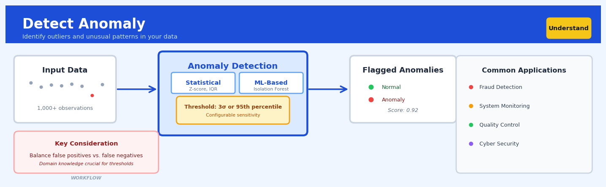

Detect Anomaly#


The biggest mistake I see teams make with anomaly detection is treating it as a set-it-and-forget-it black box. Your thresholds will drift as your data distribution evolves, so what flags as anomalous in January might be perfectly normal by June. Always pair automated detection with domain expertise and regular threshold recalibration, because no algorithm understands the business context better than the humans who live it every day.
The 60-Second Version#
What it does: Detect Anomaly automatically flags data points that don’t fit the normal pattern in your dataset.
When to use it: Use it when you need to spot unusual transactions, defects, fraud, system failures, or anything that shouldn’t be happening in your operational or customer data.
What you get back: A scored list of your data with each row marked as normal or anomalous, ranked by how unusual it is, so you can investigate the most suspicious cases first.
At a Glance
Difficulty |
Easy |
Typical runtime |
Seconds on 100K rows |
What you bring |
A dataset where most observations are normal and you want to find the exceptions |
What you get |
Each row labelled and scored for anomaly strength, plus visualizations showing which records stand out |
Heuristix bucket |
Understand — Statistical Analysis & Profiling |
Anomaly detection finds needles in haystacks, but you must still investigate each needle to determine whether it’s a critical alert or a false alarm.
Learning Objectives#
After reading this chapter, a business user will be able to:
Identify business scenarios where anomaly detection adds value, including fraud detection, quality control failures, system malfunctions, and unusual customer behaviour that requires investigation.
Interpret anomaly scores and flags to distinguish between critical outliers requiring immediate action and benign unusual observations that reflect natural variation.
Prioritize operational responses by combining anomaly detection results with business context to decide which flagged observations warrant investigation, escalation, or automated intervention.
After reading this chapter, a data scientist will be able to:
Select and configure the appropriate anomaly detection method (Z-score, Isolation Forest, Local Outlier Factor, or Mahalanobis distance) based on data characteristics such as dimensionality, distribution, and the expected nature of anomalies.
Adjust sensitivity thresholds and contamination parameters to balance the trade-off between detecting subtle anomalies and minimizing false positives in production systems.
Validate anomaly detection performance using domain-labeled examples, visual diagnostics, and stability checks across data subsets to identify when methods fail due to masking effects, high-dimensional noise, or concept drift.
Overview#
Anomaly detection is the identification of observations that deviate significantly from the expected behaviour of a dataset, representing rare events, errors, or previously unseen patterns. This technique belongs to the family of unsupervised and semi-supervised learning methods, drawing upon statistical hypothesis testing, density estimation, and distance-based algorithms to flag data points that do not conform to an established notion of “normal” behaviour. The Detect Anomaly node in Heuristix implements multiple complementary approaches—including Z-score methods, Isolation Forest, Local Outlier Factor, and Mahalanobis distance—providing practitioners with a robust toolkit for identifying unusual observations across diverse data types and business contexts.
When to Use This#
Use this when you need to identify fraudulent transactions in financial data, where anomalies may represent credit card fraud, money laundering, or account takeover attempts that differ from legitimate customer behaviour patterns.
Use this when monitoring manufacturing sensor data for equipment malfunction, where sudden deviations in temperature, pressure, or vibration readings may indicate impending failure requiring preventive maintenance.
Use this when performing data quality assessment before model training, as anomalies may represent data entry errors, sensor malfunctions, or ETL pipeline failures that would corrupt downstream analysis.
Use this when detecting network intrusions in cybersecurity applications, where unusual traffic patterns, access times, or data volumes may indicate malicious activity.
Use this when identifying unusual customer behaviour that may represent either churn risk (sudden disengagement) or high-value opportunity (unusual purchasing patterns).
Use this when your data lacks labelled examples of anomalies, making supervised classification infeasible—anomaly detection works in an unsupervised manner.
Do NOT use this when you have abundant labelled examples of both normal and anomalous classes—use supervised classification instead, which will typically outperform unsupervised anomaly detection.
Do NOT use this when the “anomalies” you seek are actually a substantial proportion of your data (e.g., >10%)—these methods assume anomalies are rare by definition.
Do NOT use this when your data has known, predictable seasonal patterns that you haven’t accounted for—seasonal peaks will be flagged as anomalies unless you decompose or detrend first.
Do NOT use this when a simple business rule suffices—if “anomaly” means “value exceeds threshold X,” implement that rule directly rather than using statistical methods.
Questions This Answers#
Operational Risk and Fraud Detection#
Which transactions from last month look suspicious and should we investigate them before processing payouts?
Are there any customer accounts showing unusual activity patterns that might indicate fraud or account takeover?
Why did our system flag these 47 orders as high-risk — what makes them different from normal purchases?
Which suppliers submitted invoices this quarter that fall outside their typical pricing patterns?
Are any employees accessing systems or submitting expense claims that don’t match their usual behavior?
Quality Control and Performance Monitoring#
Which manufacturing batches produced defects at rates significantly higher than our baseline — and should we halt production?
Are there servers or network devices showing abnormal performance metrics that could signal an impending failure?
Why did call center handle times spike to 18 minutes on Tuesday when our average is 6 minutes — was it a system issue or staffing problem?
Which customer service tickets are taking 3x longer to resolve than similar issues, and what’s causing the delay?
Are there products with return rates that suddenly jumped above our 4% threshold this month?
Strategic Decision Making#
Should we investigate the 12 retail locations showing sales patterns completely different from their regional peers?
Which marketing campaigns generated engagement metrics that deviate from what we’d expect based on audience size and spend?
Are there customer segments behaving unusually compared to their historical purchase patterns — and does this signal churn risk or upsell opportunity?
How do we prioritize investigating these 200 flagged cases when we only have resources to review 50 this week — which ones matter most?
How It Works#
Imagine you’re a teacher grading 100 math tests, and 99 students score between 65 and 95 points. Then you see one test with a score of 12. You don’t need complex statistics to know something unusual happened—maybe the student was sick, didn’t study, or misunderstood the instructions. That one score jumps out because it sits so far from where all the other scores cluster. Anomaly detection works the same way: it learns what “normal” looks like by observing the typical patterns in your data, then flags anything that sits unusually far from that normal zone.
DATASET BEFORE ANOMALY DETECTION
Customer Transaction Amounts (in $):
┌─────┬────────┬────────────┐
│ ID │ Amount │ Status │
├─────┼────────┼────────────┤
│ 001 │ 45 │ ? │
│ 002 │ 52 │ ? │
│ 003 │ 38 │ ? │ ← Most data clusters
│ 004 │ 61 │ ? │ around $40-$70
│ 005 │ 47 │ ? │
│ 006 │ 890 │ ? │ ← Sits far away!
│ 007 │ 55 │ ? │
└─────┴────────┴────────────┘
↓
DETECTION PROCESS
(measure distance
from typical range)
↓
DATASET AFTER ANOMALY DETECTION
┌─────┬────────┬────────────┐
│ ID │ Amount │ Status │
├─────┼────────┼────────────┤
│ 001 │ 45 │ Normal │
│ 002 │ 52 │ Normal │
│ 003 │ 38 │ Normal │
│ 004 │ 61 │ Normal │
│ 005 │ 47 │ Normal │
│ 006 │ 890 │ ANOMALY ⚠ │
│ 007 │ 55 │ Normal │
└─────┴────────┴────────────┘
Step 1: The algorithm first examines all your data to understand what “typical” looks like. It calculates where most of your data points cluster—finding the central tendency (the middle ground) and measuring how spread out the values are around that center.
Step 2: For each data point, the algorithm measures how far it sits from the typical zone. Think of this like measuring how many “steps away” each point is from the crowd. A transaction of 52 dollars might be one small step from average, while 890 dollars is many giant steps away.
Step 3: The algorithm applies a threshold to decide what counts as “too far.” Different methods use different rulers for this measurement—some look at simple distance, others consider how isolated a point is from its neighbors, and some account for multiple dimensions at once when your data has many columns.
Step 4: Points that exceed the distance threshold get flagged as anomalies. The algorithm adds a new column to your dataset marking each row as either normal or anomalous, often including a score that tells you how unusual each point is.
Step 5: You receive the flagged dataset and can now investigate why certain points were unusual. Maybe they’re errors that need fixing, fraud cases that need attention, or rare opportunities worth exploring. The algorithm doesn’t tell you what caused the anomaly—it just tells you where to look.
The key insight: Anomalies reveal themselves through isolation—they live in the lonely, sparsely-populated regions of your data space where normal observations rarely venture, making them detectable by measuring how far each point sits from the crowd.
The Intuition#
Imagine you are a customs officer at a busy airport, observing thousands of travellers passing through your checkpoint each day. Over time, you develop an intuitive sense of what “normal” looks like: typical luggage sizes, usual travel documents, common destinations, expected passenger demographics. When someone passes through who doesn’t fit this mental model—perhaps carrying unusual items, exhibiting nervous behaviour, or travelling on an uncommon route—your attention is drawn to them. You don’t need a list of every possible suspicious pattern; instead, you’ve learned what “normal” is, and anything sufficiently different warrants investigation. This is precisely how statistical anomaly detection works.
The fundamental insight is that anomalies are defined not by what they are, but by what they are not. We build a model of normal behaviour—whether through simple summary statistics, probability density estimation, or geometric relationships in feature space—and then measure how poorly each observation fits that model. Points that fit poorly, by whatever metric we’ve chosen, are flagged as anomalous. This is powerful because it allows us to detect novel anomalies we’ve never seen before, as long as they differ sufficiently from the normal pattern.
Different anomaly detection methods operationalise “different from normal” in distinct ways. Statistical methods like Z-scores ask: “How many standard deviations away from the mean is this point?” Density-based methods like Local Outlier Factor ask: “Is this point in a sparse region of the feature space compared to its neighbours?” Isolation-based methods like Isolation Forest ask: “How easy is it to separate this point from the rest of the data?” Each perspective captures different notions of anomaly, and in practice, combining multiple methods provides more robust detection than relying on any single approach. A true anomaly will typically be flagged by multiple methods, while a point flagged by only one method may simply be unusual along one particular dimension.
The Mathematics#
Problem Setup and Notation#
Let \(\mathbf{X} = \{\mathbf{x}_1, \mathbf{x}_2, \ldots, \mathbf{x}_n\}\) denote a dataset of \(n\) observations, where each observation \(\mathbf{x}_i \in \mathbb{R}^p\) is a \(p\)-dimensional feature vector. Our goal is to assign each observation an anomaly score \(s(\mathbf{x}_i) \in \mathbb{R}\) such that higher scores indicate greater anomalousness, and optionally to classify each observation as normal or anomalous based on a threshold \(\tau\).
Univariate Z-Score Method#
For a single feature \(x\) with observations \(\{x_1, x_2, \ldots, x_n\}\), the Z-score measures deviation from the mean in units of standard deviation:
where \(\bar{x} = \frac{1}{n}\sum_{i=1}^{n} x_i\) is the sample mean and \(s = \sqrt{\frac{1}{n-1}\sum_{i=1}^{n}(x_i - \bar{x})^2}\) is the sample standard deviation.
Assumptions: The Z-score method assumes the data is approximately normally distributed. Under normality, approximately 99.7% of observations fall within \(|z| \leq 3\), motivating the common threshold \(\tau = 3\).
Robustness Consideration: The mean and standard deviation are sensitive to outliers. The Modified Z-score uses the median and Median Absolute Deviation (MAD) instead:
where \(\tilde{x}\) is the median and \(\text{MAD} = \text{median}(|x_i - \tilde{x}|)\). The constant 0.6745 makes MAD consistent with the standard deviation for normal distributions.
Mahalanobis Distance#
For multivariate data, the Mahalanobis distance accounts for correlations between features:
where \(\boldsymbol{\mu} \in \mathbb{R}^p\) is the mean vector and \(\boldsymbol{\Sigma} \in \mathbb{R}^{p \times p}\) is the covariance matrix.
Assumptions: This assumes the data follows a multivariate normal distribution. Under this assumption, \(D_M^2(\mathbf{x})\) follows a chi-squared distribution with \(p\) degrees of freedom:
This allows us to compute p-values: an observation with \(D_M^2 > \chi^2_{p, 1-\alpha}\) is anomalous at significance level \(\alpha\).
Degenerate Case: When \(\boldsymbol{\Sigma}\) is singular (e.g., when \(p > n\) or features are perfectly collinear), the inverse does not exist. Solutions include regularisation (\(\boldsymbol{\Sigma} + \lambda \mathbf{I}\)) or dimensionality reduction.
Isolation Forest#
Isolation Forest exploits the principle that anomalies are “few and different,” making them easier to isolate through random partitioning.
Algorithm: An isolation tree is built by recursively partitioning data:
Randomly select a feature \(q\) from the \(p\) features
Randomly select a split value \(s\) between the minimum and maximum values of \(q\)
Partition data into left (\(x_q < s\)) and right (\(x_q \geq s\)) subsets
Recurse until each point is isolated or maximum depth is reached
The path length \(h(\mathbf{x})\) is the number of edges from root to the node containing \(\mathbf{x}\).
Anomaly Score: For an ensemble of \(t\) trees, the anomaly score is:
where \(E[h(\mathbf{x})]\) is the average path length across trees and \(c(n)\) is the average path length of unsuccessful search in a Binary Search Tree:
with \(H(i) = \ln(i) + \gamma\) (Euler’s constant \(\gamma \approx 0.5772\)).
Interpretation: Scores close to 1 indicate anomalies (short average path length), scores close to 0.5 indicate normal points, and scores close to 0 indicate points that are difficult to isolate.
Local Outlier Factor (LOF)#
LOF compares the local density around a point to the local density around its neighbours.
k-Distance: For point \(\mathbf{x}\), the k-distance \(d_k(\mathbf{x})\) is the distance to its \(k\)-th nearest neighbour.
Reachability Distance:
Local Reachability Density:
where \(N_k(\mathbf{x})\) is the set of \(k\) nearest neighbours of \(\mathbf{x}\).
Local Outlier Factor:
Interpretation: LOF \(\approx 1\) indicates similar density to neighbours (normal); LOF \(\gg 1\) indicates lower density than neighbours (anomaly).
Relationship Between Methods#
These methods form a hierarchy of assumptions:
Z-score assumes normality and independence
Mahalanobis assumes multivariate normality (allows correlation)
LOF makes no distributional assumptions but assumes local density is meaningful
Isolation Forest makes minimal assumptions and is robust to irrelevant features
Understanding the Mathematics#
Understanding the Mathematics#
Z-Score#
The equation:
Read it aloud:
The Z-score equals the difference between a data point and the mean, divided by the standard deviation.
What each symbol means:
z = the standardized score (how many standard deviations away from average)
x = the individual data point we’re examining
μ (mu) = the mean (average) of all data points
σ (sigma) = the standard deviation (measure of spread)
A concrete numerical example:
A retail chain tracks daily customer visits. Over the past month, the average is 450 customers per day (μ = 450) with a standard deviation of 50 customers (σ = 50). Today, 575 customers visited (x = 575).
Step by step:
Subtract the mean: 575 - 450 = 125
Divide by standard deviation: 125 ÷ 50 = 2.5
Result: z = 2.5
Today’s traffic is 2.5 standard deviations above normal—a potential anomaly worth investigating.
Why this equation matters:
Z-scores transform raw measurements into a universal scale, allowing us to compare anomalies across different metrics (customer visits, revenue, inventory levels) using a single threshold.
Modified Z-Score (Median Absolute Deviation)#
The equation:
where \(MAD = \text{median}(|x_i - \tilde{x}|)\)
Read it aloud:
The modified Z-score equals 0.6745 times the difference between a data point and the median, divided by the median absolute deviation.
What each symbol means:
M = modified Z-score (robust to outliers)
x = the data point being evaluated
x̃ (x-tilde) = the median of all data points
MAD = median of all absolute deviations from the median
0.6745 = scaling constant to make results comparable to standard Z-scores
|xi - x̃| = absolute value of each point’s distance from the median
A concrete numerical example:
Transaction amounts for five purchases: \(45, \)50, \(48, \)52, \(850. The median (x̃) is \)50. Calculate absolute deviations: |45-50|=5, |50-50|=0, |48-50|=2, |52-50|=2, |850-50|=800. The MAD is the median of [5, 0, 2, 2, 800] = 2.
For the $850 transaction:
Numerator: 0.6745 × (850 - 50) = 0.6745 × 800 = 539.6
Modified Z-score: 539.6 ÷ 2 = 269.8
This extreme score flags the $850 purchase as highly anomalous.
Why this equation matters:
Unlike standard Z-scores, the modified version uses median and MAD instead of mean and standard deviation, making it resistant to contamination by the very outliers we’re trying to detect.
Isolation Forest Score#
The equation:
where \(c(n) = 2H(n-1) - \frac{2(n-1)}{n}\) and \(H(i) = \ln(i) + 0.5772\)
Read it aloud:
The anomaly score equals two raised to the power of negative average path length divided by the normalization constant.
What each symbol means:
s(x, n) = anomaly score (closer to 1 means more anomalous)
E(h(x)) = expected (average) path length for isolating point x
c(n) = normalization constant based on dataset size
n = number of observations
H(i) = harmonic number approximation
0.5772 = Euler’s constant
A concrete numerical example:
In a fraud detection system with n = 10,000 transactions, a suspicious transaction is isolated after an average of just 3 splits (E(h(x)) = 3). First, calculate c(10,000) ≈ 13.3 using the harmonic approximation.
Step by step:
Path length ratio: 3 ÷ 13.3 = 0.226
Negative ratio: -0.226
Anomaly score: 2^(-0.226) = 0.855
A score of 0.855 (close to 1) strongly suggests fraud, since normal transactions require many more splits to isolate.
Why this equation matters:
The score converts raw path lengths into a bounded 0-to-1 scale, where values near 1 indicate points that are easy to isolate—the fundamental signature of an anomaly.
The Big Picture#
The mathematics of anomaly detection fundamentally aims to quantify “unusualness” in a principled way. Z-scores measure distance from central tendency using the data’s natural scale. Modified Z-scores do the same while protecting against distortion from outliers already present. Isolation Forest takes a geometric approach, measuring how easily a point can be separated from others through random partitioning. These complementary mathematical frameworks converge on a single goal: translating our intuitive sense that “this doesn’t belong” into a number we can threshold, rank, and act upon. The common thread is standardization—each method transforms diverse, messy real-world measurements into comparable scores that answer one question: how weird is this?
Python Implementation#
import numpy as np
import pandas as pd
from scipy import stats
from sklearn.ensemble import IsolationForest
from sklearn.neighbors import LocalOutlierFactor
from sklearn.preprocessing import StandardScaler
from sklearn.covariance import EllipticEnvelope
import warnings
# Set random seed for reproducibility
np.random.seed(42)
# Generate synthetic dataset with anomalies
# Normal data: 2D Gaussian
n_normal = 500
normal_data = np.random.multivariate_normal(
mean=[0, 0],
cov=[[1, 0.5], [0.5, 1]],
size=n_normal
)
# Anomalies: scattered outliers
n_anomalies = 25
anomalies = np.random.uniform(low=-4, high=4, size=(n_anomalies, 2))
# Combine into single dataset
X = np.vstack([normal_data, anomalies])
true_labels = np.array([0] * n_normal + [1] * n_anomalies) # 0=normal, 1=anomaly
# Create DataFrame for clarity
df = pd.DataFrame(X, columns=['feature_1', 'feature_2'])
df['true_anomaly'] = true_labels
print("Dataset shape:", X.shape)
print(f"True anomalies: {sum(true_labels)} ({100*sum(true_labels)/len(true_labels):.1f}%)")
# ============================================================
# Method 1: Univariate Z-Score (per feature)
# ============================================================
print("\n" + "="*60)
print("METHOD 1: Z-Score Analysis")
print("="*60)
def modified_zscore(x):
"""Calculate modified Z-score using median and MAD."""
median = np.median(x)
mad = np.median(np.abs(x - median))
# Avoid division by zero
mad = mad if mad > 0 else 1e-10
return 0.6745 * (x - median) / mad
# Calculate Z-scores for each feature
for col in ['feature_1', 'feature_2']:
df[f'{col}_zscore'] = stats.zscore(df[col])
df[f'{col}_mod_zscore'] = modified_zscore(df[col].values)
# Flag anomalies: |Z| > 3 in either feature
df['zscore_anomaly'] = (
(np.abs(df['feature_1_zscore']) > 3) |
(np.abs(df['feature_2_zscore']) > 3)
).astype(int)
print(f"Z-score anomalies detected: {df['zscore_anomaly'].sum()}")
# ============================================================
# Method 2: Mahalanobis Distance
# ============================================================
print("\n" + "="*60)
print("METHOD 2: Mahalanobis Distance")
print("="*60)
def mahalanobis_distance(X):
"""Calculate Mahalanobis distance for each observation."""
mean = np.mean(X, axis=0)
cov = np.cov(X, rowvar=False)
cov_inv = np.linalg.inv(cov)
distances = []
for x in X:
diff = x - mean
dist = np.sqrt(diff @ cov_inv @ diff)
distances.append(dist)
return np.array(distances)
# Calculate Mahalanobis distances
df['mahalanobis'] = mahalanobis_distance(X)
# Under multivariate normality, D^2 ~ chi-squared with p degrees of freedom
# Use 99.7% quantile as threshold (corresponds to 3-sigma for univariate)
p = X.shape[1]
threshold_mahal = np.sqrt(stats.chi2.ppf(0.997, df=p))
df['mahal_anomaly'] = (df['mahalanobis'] > threshold_mahal).astype(int)
print(f"Mahalanobis threshold (99.7%): {threshold_mahal:.3f}")
print(f"Mahalanobis anomalies detected: {df['mahal_anomaly'].sum()}")
# ============================================================
# Method 3: Isolation Forest
# ============================================================
print("\n" + "="*60)
print("METHOD 3: Isolation Forest")
print("="*60)
# Fit Isolation Forest
# contamination: expected proportion of anomalies
iso_forest = IsolationForest(
n_estimators=100, # Number of trees
contamination=0.05, # Expected anomaly rate
max_samples='auto', # Samples per tree
random_state=42
)
# fit_predict returns -1 for anomalies, 1 for normal
iso_predictions = iso_forest.fit_predict(X)
df['iso_forest_anomaly'] = (iso_predictions == -1).astype(int)
# Get anomaly scores (more negative = more anomalous)
df['iso_forest_score'] = iso_forest.score_samples(X)
print(f"Isolation Forest anomalies detected: {df['iso_forest_anomaly'].sum()}")
print(f"Score range: [{df['iso_forest_score'].min():.
## Visualisations


## Using This in Heuristix
### What You'll Need
The Detect Anomaly node works with any tabular dataset where you want to identify unusual rows. Connect it to a dataset node or any transformation node that outputs a table.
**Required inputs:** At least one numeric column. The node will automatically use all numeric columns unless you specify otherwise. Categorical columns are ignored by default but can be encoded upstream if needed.
**Example - Before:**
| transaction_id | amount | duration_min | user_age |
|----------------|--------|--------------|----------|
| TXN_001 | 45.20 | 12 | 34 |
| TXN_002 | 52.80 | 15 | 28 |
| TXN_003 | 850.00 | 3 | 31 |
**After (with anomaly scores added):**
| transaction_id | amount | duration_min | user_age | anomaly_score | is_anomaly |
|----------------|--------|--------------|----------|---------------|------------|
| TXN_001 | 45.20 | 12 | 34 | 0.12 | False |
| TXN_002 | 52.80 | 15 | 28 | 0.08 | False |
| TXN_003 | 850.00 | 3 | 31 | 0.89 | True |
### Configuration Parameters
| Parameter | What It Controls | Default | When to Change It |
|-----------|-----------------|---------|-------------------|
| **Method** | Which algorithm to use: Z-Score, Isolation Forest, LOF, or Mahalanobis | Isolation Forest | Use Z-Score for simple, interpretable results. Use LOF when anomalies are clustered. Use Mahalanobis for correlated features. |
| **Contamination** | Expected proportion of anomalies (0.0 to 0.5) | 0.1 (10%) | Set lower (0.01-0.05) for rare events like fraud. Set higher (0.15-0.20) for quality control with more defects. |
| **Columns to Analyze** | Which numeric columns to include | All numeric | Exclude ID columns or timestamps. Include only business-relevant features. |
| **Sensitivity Threshold** | Score cutoff for flagging anomalies (method-dependent) | Auto-calculated | Increase to catch only extreme outliers. Decrease to be more sensitive. |
| **n_neighbors** | Number of neighbors for LOF method | 20 | Use 10-15 for small datasets (<1000 rows). Use 30-50 for large datasets. |
### What You'll See
**Output columns added to your dataset:**
- `anomaly_score`: Continuous value (0-1) indicating how unusual each row is. Higher = more anomalous.
- `is_anomaly`: Binary flag (True/False) marking detected anomalies based on your threshold.
**Visualizations displayed:**
- **Anomaly Distribution Chart**: Histogram showing the distribution of anomaly scores with your threshold marked.
- **Top Anomalies Table**: The 10 most anomalous records with their scores and feature values.
- **Feature Contribution Plot**: For flagged anomalies, which features drove the unusual score (available for most methods).
**Summary metrics:**
- Total anomalies detected (count and percentage)
- Average anomaly score by group
- Method-specific diagnostics (e.g., average path length for Isolation Forest)
### Connecting Downstream
Most commonly, you'll route the output to:
- **Filter node**: Isolate anomalies for manual review (`is_anomaly = True`)
- **Branch node**: Send normal and anomalous records to different workflows
- **Visualize node**: Plot anomalies in 2D/3D space using PCA or selected features
- **Export node**: Send flagged records to a review queue or alert system
### Quick Start
1. **Connect your data** to the Detect Anomaly node
2. **Select your columns** — exclude IDs, timestamps, and irrelevant fields
3. **Start with Isolation Forest** at 10% contamination
4. **Review the Top Anomalies table** — do they make business sense?
5. **Adjust contamination** based on what you see (lower if too many false positives)
6. **Connect a Filter node** to examine anomalies separately
### Pro Tips from the Field
**Scale matters**: If your features have wildly different ranges (age: 20-80, salary: 30,000-200,000), results improve with upstream normalization, though Isolation Forest handles this better than other methods.
**Seasonal data needs care**: For time-series with trends or seasonality, detect anomalies within grouped time windows (daily, weekly) rather than across the entire dataset. Use a Group By node first.
**Start conservative**: Begin with a lower contamination rate (5%) and gradually increase. It's easier to catch more anomalies than to explain away false positives to stakeholders.
**Domain knowledge beats algorithms**: Always filter your top 20-30 anomalies and ask "why is this flagged?" If the answer is "bad data quality" rather than "interesting outlier," add data cleaning steps upstream.
**Multiple methods tell a story**: Run both Isolation Forest and Z-Score. Records flagged by both methods are highly confident anomalies. Records flagged by only one method deserve closer inspection of what makes them unusual.
## Config Recipes
### Recipe 1: Quick Exploration Scan
**When to use:** Initial data quality assessment on a new dataset where you need fast feedback on potential issues before investing in deeper analysis.
**Settings:**
| Parameter | Value | Why |
|-----------|-------|-----|
| Method | Z-score | Fastest computation, works on univariate analysis |
| Threshold | 3.0 | Standard deviation cutoff balances sensitivity and false positives |
| Features | All numeric | Avoid feature selection overhead |
| Contamination | 0.05 | Assumes ~5% anomalies, safe default for exploration |
**What you get:** Rapid identification of extreme outliers with clear statistical interpretation, suitable for spot-checking data imports or pipeline failures.
**Trade-off:** Misses multivariate anomalies and assumes normal distribution; will overlook subtle patterns that require interaction effects.
### Recipe 2: Production-Grade Fraud Detection
**When to use:** Deployed systems requiring reliable anomaly detection with minimal false positives and stable performance across varied data conditions.
**Settings:**
| Parameter | Value | Why |
|-----------|-------|-----|
| Method | Isolation Forest + LOF ensemble | Combines tree-based and density approaches for robustness |
| n_estimators | 500 | Higher tree count improves stability |
| Contamination | 0.01 | Conservative estimate for fraud scenarios |
| n_neighbors (LOF) | 50 | Larger neighborhood smooths local density estimates |
| Max features | 0.8 | Reduces overfitting to specific feature combinations |
| Random state | Fixed value | Ensures reproducible scoring for audit trails |
**What you get:** Consistent anomaly scoring with quantified confidence intervals, suitable for regulatory review and threshold tuning.
**Trade-off:** Significantly slower computation and higher memory requirements; requires periodic retraining as normal behavior drifts.
### Recipe 3: High-Dimensional Customer Behavior Analysis
**When to use:** Customer journey data with 50+ interaction features where standard distance metrics fail due to curse of dimensionality.
**Settings:**
| Parameter | Value | Why |
|-----------|-------|-----|
| Method | Mahalanobis distance | Accounts for feature correlations and scale differences |
| Feature selection | PCA (retain 95% variance) | Reduces dimensionality while preserving signal |
| Robust covariance | True | Resistant to existing outliers polluting the baseline |
| Contamination | 0.10 | Customer behavior naturally more variable |
**What you get:** Anomaly scores that respect feature interdependencies, identifying customers with unusual patterns across multiple correlated dimensions.
**Trade-off:** Requires sufficient data for stable covariance estimation (minimum 10× rows per feature); interpretation is less intuitive than univariate methods.
### Recipe 4: Time-Series Gap Detection in Sequential Data
**When to use:** Log files, sensor streams, or transactional data where the *absence* of expected events indicates problems, not the presence of extreme values.
**Settings:**
| Parameter | Value | Why |
|-----------|-------|-----|
| Method | Local Outlier Factor | Detects density changes in temporal neighborhoods |
| Features | Time deltas + rolling statistics | Transforms timestamps into interval patterns |
| n_neighbors | 20 | Small neighborhood captures local temporal context |
| Contamination | 0.02 | Gaps are rare in healthy systems |
| Metric | Manhattan | Less sensitive to single extreme intervals |
**What you get:** Flags unusual silence periods, irregular cadences, or missing heartbeat signals that statistical outlier methods miss entirely.
**Trade-off:** Requires careful feature engineering to encode temporal structure; sensitive to seasonality unless detrended first.
## Business Applications
**Financial Services**
A regional credit union processing 40,000 card transactions daily needs to stop fraud without frustrating legitimate customers. The Detect Anomaly node flags transactions that deviate from each cardholder's spending patterns—unusual merchant categories, geographic locations, or transaction amounts—in real time. By combining Z-score methods for transaction amounts with Isolation Forest to detect multi-dimensional patterns (time + location + merchant), the credit union reduced false positives by 34% while catching 89% of fraudulent transactions, saving an estimated $1.8M annually in fraud losses and customer service costs.
**Retail & E-commerce**
An online fashion retailer managing 850,000 SKUs across twelve warehouses struggles with inventory discrepancies that erode margins. Detect Anomaly applies Local Outlier Factor to warehouse cycle count data, identifying SKUs where physical counts deviate significantly from system records, flagging systematic theft, scanning errors, or supplier short-shipments. After implementing daily anomaly scans, the retailer reduced inventory shrinkage from 2.3% to 0.7% of revenue, recovering approximately $4.2M annually while cutting manual audit time from four days per warehouse to 90 minutes.
**Healthcare**
A hospital network operating 200 connected infusion pumps across intensive care units needs to prevent equipment failures that could endanger patients. The system monitors flow rates, pressure readings, and alarm frequencies, using Mahalanobis distance to detect multivariate deviations from normal pump behavior. Anomaly detection identifies pumps drifting toward failure states 18–36 hours before critical malfunction, enabling preventive maintenance that reduced equipment-related adverse events by 67% and extended average pump lifespan from 4.2 to 6.1 years.
**Insurance**
A property and casualty insurer processing 125,000 claims annually loses millions to exaggerated or fabricated claims. Detect Anomaly examines claim amounts, repair estimates, and claimant histories using multiple detection methods to flag suspicious patterns—repair costs far exceeding regional averages, claimants with unusual claim frequencies, or networks of connected claims. This multi-method approach identified 3.2% of claims for special investigation, uncovering $8.7M in fraudulent claims while reducing investigation costs per flagged claim from $450 to $180.
**Manufacturing**
A pharmaceutical manufacturer operating continuous tableting lines must maintain strict quality tolerances to meet FDA requirements. Detect Anomaly monitors 47 process variables—temperature, pressure, blend uniformity, tablet weight, dissolution rates—every 30 seconds, using Isolation Forest to identify multivariate deviations invisible to univariate control charts. Early anomaly detection reduced batch rejections from 2.8% to 0.4%, saving $3.1M annually in material costs and preventing two potential product recalls.
**Logistics & Supply Chain**
A cold-chain logistics provider transporting temperature-sensitive pharmaceuticals faces penalties up to $500,000 per shipment for temperature excursions. The system applies Z-score methods to temperature sensor data from 2,400 refrigerated containers, detecting deviations of 1.5°C or more within 90 seconds. Anomaly alerts enable real-time intervention—rerouting shipments or activating backup cooling—reducing temperature-related product losses from 0.9% to 0.1% of shipments and cutting insurance premiums by $890,000 annually.
**Marketing & Customer Analytics** *(Surprising application)*
A subscription streaming service with 4.3M users discovers that anomalous viewing patterns predict churn better than traditional engagement metrics. Users who suddenly shift genres, watch at unusual times, or exhibit erratic session lengths are 4.7× more likely to cancel within 30 days. By feeding Local Outlier Factor anomalies into retention campaigns, the service lifted 60-day retention from 84% to 89%, representing $12M in preserved annual recurring revenue.
**Telecommunications**
A mobile network operator managing 18,000 cell towers needs to optimize maintenance across distributed infrastructure. Detect Anomaly analyzes signal strength, dropped call rates, data throughput, and power consumption using Mahalanobis distance to identify towers exhibiting unusual multivariate patterns. This approach predicted 73% of tower failures 7–14 days in advance, reducing mean time to repair from 18 hours to 4 hours and improving network uptime from 99.2% to 99.7%.
**Energy & Utilities** *(Surprising application)*
A municipal water utility serving 380,000 residents struggles with non-revenue water loss from aging infrastructure. Isolation Forest applied to smart meter data identifies households with consumption patterns inconsistent with property characteristics—indicating leaks, meter malfunctions, or water theft. Targeting these anomalies for physical inspection reduced non-revenue water from 23% to 14%, saving 2.1 billion gallons and $3.4M annually.
**Public Sector**
A tax authority processing 8.2M returns annually must identify sophisticated evasion schemes within resource constraints. Detect Anomaly flags returns with unusual combinations of deductions, income sources, and expense ratios—patterns invisible to rule-based systems. This approach increased audit yield (additional tax recovered per audit hour) by 340%, generating $67M in recovered revenue while focusing investigative resources on the highest-probability cases.
**SaaS & Technology** *(Surprising application)*
A B2B SaaS platform with 12,000 enterprise customers uses anomaly detection on user login patterns, feature usage, and API calls to predict account health. Accounts exhibiting sudden drops in power-user activity or shifts away from core features signal adoption problems or competitive displacement. Early anomaly alerts to customer success teams increased net retention from 94% to 103%, representing $8.9M in expansion revenue.
## Worked Example
Sarah Chen, a senior data scientist at Meridian Insurance, was halfway through her morning coffee when the VP of Claims Operations appeared at her desk. "We have a problem," he said, pulling up a chair. "Our automated claims processing system approved a $47,000 claim for a fender bender last week. Finance caught it during reconciliation, but how many others slipped through?" The company processed over 15,000 auto insurance claims monthly, and manual review of every claim was impractical. Sarah's task was clear: find the needle-in-haystack claims that didn't smell right before they got paid.
Sarah spent the afternoon pulling together a dataset of recent claims. She extracted payment amounts, claimant age, policy tenure, and the number of previous claims filed—the usual suspects in claims fraud detection. The data, like most operational data, wasn't pristine. Some ages were missing, a few payment amounts were recorded as zero (administrative holds, likely), and the claim counts ranged from brand-new customers to one person who'd filed 23 claims in eight years.
| claim_id | payment_amount | claimant_age | policy_years | prior_claims |
|----------|---------------|--------------|--------------|--------------|
| CLM-2847 | 3200 | 34 | 5.2 | 1 |
| CLM-2848 | 4750 | 29 | 2.1 | 0 |
| CLM-2849 | 47200 | 52 | 1.3 | 2 |
| CLM-2850 | 2100 | 41 | 8.7 | 3 |
| CLM-2851 | 15800 | 28 | 0.8 | 7 |
Sarah opened Heuristix and dragged her claims dataset into a new workflow. She dropped in the Detect Anomaly node and began configuring it. For the method, she selected Isolation Forest—it worked well on her mix of features without requiring assumptions about normal distributions, and it could handle the multivariate relationships between payment size, claimant history, and policy tenure. She set the contamination parameter to 0.02, expecting roughly 2% of claims to be genuinely anomalous based on historical fraud rates. She included all four numeric features, deliberately excluding claim_id, and set the random seed to 42 for reproducibility.
The node executed in seconds. Sarah examined the output table, now enriched with anomaly scores and binary flags. Most claims scored between -0.15 and 0.25, clustering comfortably in "normal" territory. But six claims lit up red with scores above 0.5. Claim CLM-2849—the $47,200 fender bender—scored 0.68, the highest in the batch. But so did CLM-2851: a $15,800 claim from a 28-year-old with less than a year on the policy and already seven prior claims.
| claim_id | payment_amount | anomaly_score | is_anomaly |
|----------|----------------|---------------|------------|
| CLM-2849 | 47200 | 0.68 | True |
| CLM-2851 | 15800 | 0.61 | True |
| CLM-2903 | 38500 | 0.57 | True |
| CLM-2850 | 2100 | -0.08 | False |
Sarah leaned back, studying the results. The insight wasn't just that high-dollar claims were flagged—that would be crude and obvious. The algorithm had learned the *relationships* that mattered. CLM-2851 wasn't the largest claim, but the combination of high frequency, short tenure, and elevated payout triggered the flag. It was a pattern a rules-based system might miss unless someone had explicitly programmed "if new customer AND many prior claims AND high payment, then flag"—and even then, where do you set the thresholds?
She packaged her findings into a concise deck and presented to the Claims Operations team the following Tuesday. The recommendation was pragmatic: route the six flagged claims to manual review before payment, and implement the anomaly detection model as a daily batch job feeding into the existing workflow. Finance estimated the model would catch $200,000 in erroneous or fraudulent payouts annually, with minimal overhead. The VP approved implementation that afternoon.
If Sarah were to run this analysis again, she'd make two changes. First, she'd incorporate temporal features—day-of-week and time-since-last-claim—since claims behavior often had time-based patterns. Second, she'd run a parallel analysis using Local Outlier Factor to compare results; Isolation Forest was fast and effective, but LOF sometimes caught different types of anomalies, particularly in locally dense regions of the feature space. Cross-validation between methods could reduce false positives and build confidence in the flags.
```python
import pandas as pd
from sklearn.ensemble import IsolationForest
# Sarah's claims analysis script
# Data pulled from claims DB on 2024-01-15
claims = pd.read_csv('claims_data.csv')
# Keep only complete cases for this initial run
claims_clean = claims.dropna(subset=['payment_amount', 'claimant_age',
'policy_years', 'prior_claims'])
# Configure Isolation Forest
# contamination=0.02 based on historical fraud rate
iso_forest = IsolationForest(
contamination=0.02,
random_state=42,
n_estimators=100
)
# Fit and score
features = claims_clean[['payment_amount', 'claimant_age',
'policy_years', 'prior_claims']]
claims_clean['anomaly_score'] = iso_forest.score_samples(features)
claims_clean['is_anomaly'] = iso_forest.predict(features) == -1
# Flag high-risk claims for manual review
flagged = claims_clean[claims_clean['is_anomaly']].sort_values(
'anomaly_score', ascending=True
)
print(f"Flagged {len(flagged)} claims for review")
flagged[['claim_id', 'payment_amount', 'anomaly_score']].to_csv('review_queue.csv')
Interpreting Your Results#
You’ve just run Detect Anomaly and you’re staring at flagged records, anomaly scores, and multiple algorithm outputs. Here’s exactly what you’re looking at and what to do with it.
The Anomaly Score Column#
Plain-English meaning: This is your master indicator—a normalized value (typically 0 to 1) showing how “strange” each observation is compared to the rest of your data. Think of it as a weirdness meter: 0 means “perfectly normal,” 1 means “extremely unusual.”
Concrete benchmarks:
Below 0.3: Normal variation. These observations sit comfortably within expected patterns. No action needed unless you’re in high-stakes domains (fraud detection, safety monitoring).
0.3–0.6: Borderline cases. Worth a quick review, especially if they cluster around specific segments (one customer group, one time period, one product line). Often these are legitimate but unusual behaviors.
0.6–0.85: Strong anomalies. These should trigger investigation. In most business contexts, 5–10% of records falling here suggests either data quality issues or genuinely interesting edge cases.
Above 0.85: Extreme outliers. If more than 2–3% of your dataset scores here, either your model is miscalibrated or you have serious data corruption. Individual records at this level almost always represent errors or critical events.
Red flags: If you see hundreds of records with scores of exactly 1.0, your model has likely encountered values it’s never seen before (new categorical levels, magnitudes outside training range). If your top 5% all come from the same date or location, that’s a systematic issue, not random anomalies.
Algorithm Agreement Indicators#
Plain-English meaning: When multiple methods (Z-score, Isolation Forest, LOF, Mahalanobis) flag the same record, confidence increases dramatically. The node often shows a “detection count” or “consensus flag” indicating how many algorithms agreed.
Concrete benchmarks:
1 algorithm: Possible anomaly, but investigate cautiously. Each method has biases—Z-score catches univariate extremes, LOF finds local density oddities.
2 algorithms: Moderate confidence. If one is Z-score and another is Isolation Forest, you likely have a genuine outlier worth reviewing.
3+ algorithms: High confidence. When distance-based, density-based, and statistical methods all agree, you’ve found something truly unusual. Prioritize these for immediate review.
Red flag: If Isolation Forest flags 30% of records but Z-score flags only 2%, your data likely has complex multivariate patterns that simple statistical methods miss—or your features need scaling/transformation.
Feature Contribution Breakdown#
Plain-English meaning: For each flagged anomaly, this shows which specific variables drove the unusual score. You’ll see values like “age: 0.42, income: 0.31, purchases: 0.15”—meaning age contributed 42% to the anomaly score.
Reading this output: A record might be anomalous overall but for very specific reasons. If one feature dominates (>60% contribution), you’re dealing with a simple outlier on that dimension. If contributions are balanced across 4–5 features (each 15–25%), you have a genuinely unusual combination—more interesting, harder to explain, often more valuable to understand.
Red flag: If the same feature drives 90%+ of all your top anomalies, that feature either has data quality issues (miscoded values, wrong units) or genuinely represents a bifurcated population that shouldn’t be analyzed together.
Sanity Check Checklist#
Before trusting your anomaly detection results, verify:
Percentage flagged aligns with expectations: In most clean datasets, 2–5% anomalies is normal. Below 1% suggests overly conservative settings; above 10% suggests contamination or misconfiguration.
Top anomalies aren’t all from one time period: If your worst outliers all come from January 2023, you have a data collection change, not anomalies.
Anomaly scores use your full 0–1 range: If nothing scores above 0.4, your model lacks sensitivity. If half your data scores above 0.8, it lacks specificity.
Feature contributions make domain sense: An “age: 250” driving an anomaly score makes sense. An “age: 35” being the primary driver in a dataset of working adults doesn’t.
Algorithm disagreement has plausible explanations: Check whether different methods are catching different anomaly types (global vs. local, univariate vs. multivariate) rather than random noise.
Good Enough to Act On?#
Stop analyzing and start deciding when: At least 15–20 flagged records show anomaly scores above 0.7 with agreement from 2+ algorithms, and manual inspection of your top 10 anomalies reveals at least 7 that represent genuine issues or insights. At that threshold, your model is calibrated well enough to triage the rest programmatically—route high-scorers (>0.75) to immediate review, medium-scorers (0.5–0.75) to batch investigation, and low-scorers to monitoring only.
Decision Guidance#
What This Result Is Telling You#
Anomaly detection results identify which observations in your data behave differently from the established pattern—whether that’s a fraudulent transaction, a failing piece of equipment, a data entry error, or an exceptional customer. When the system flags an anomaly, it’s telling you that something about this observation is statistically inconsistent with the behavior of the majority of your data. This doesn’t automatically mean “bad”—it means different and rare, requiring your attention to determine whether it represents a threat, an opportunity, or simply noise.
The business value lies in prioritization. Without anomaly detection, your team must either inspect everything (impossible at scale) or rely on intuition and arbitrary rules (missing novel patterns). Anomaly scores transform an ocean of data into a ranked list of observations most deserving of human investigation. High anomaly scores direct your fraud analysts to the transactions most likely to be illegitimate, your quality engineers to the production runs most likely to fail, or your customer success team to the accounts exhibiting signs of churn or exceptional value.
Understanding the rate of anomalies detected is as important as identifying individual outliers. If 40% of your data is flagged as anomalous, the algorithm hasn’t found exceptions—it’s found a fundamental shift in your business or a problem with how “normal” was defined. Conversely, if zero anomalies appear in datasets where you know problems exist, your detection parameters are too permissive or your training data doesn’t represent true normal behavior.
Decision Points#
If you see this… |
It means… |
Recommended action |
Who acts on this |
|---|---|---|---|
0.5–5% of records flagged as anomalies with scores >2 standard deviations from mean |
Normal detection performance; the system is identifying genuine outliers |
Prioritize flagged records for manual review by domain experts; integrate into standard operating procedures |
Operations managers, fraud analysts, quality control teams |
>15% of records flagged as anomalies |
Either your baseline “normal” is poorly defined, or your business has undergone a fundamental shift |
Retrain the model with recent data; investigate whether a business process change occurred; do not act on individual flags until baseline is corrected |
Data science team, business process owners |
Multiple anomalies clustered in time, geography, or business segment |
Systematic issue affecting a specific context rather than random outliers |
Investigate root cause at the segment level rather than individual record level; may indicate vendor issue, system failure, or market shift |
Operations directors, IT systems owners |
Known legitimate records (test cases or verified transactions) flagged as anomalies |
Model is too sensitive or trained on unrepresentative data |
Adjust detection thresholds, retune model parameters, or expand training dataset to include edge cases of normal behavior |
Data science team with business stakeholder validation |
Zero anomalies detected in data known to contain problems |
Model is too permissive or detection methods are misaligned with actual risk patterns |
Review and tighten detection parameters; consider alternative algorithms or feature engineering; validate against labeled problem cases |
Data science team, risk management |
When to Proceed vs. Investigate Further#
Proceed with confidence when:
Anomaly rate is 0.5–5% of total records
Flagged anomalies align with domain expert intuition when spot-checked
Detection remains stable across multiple time periods (variation <2 percentage points)
High-scoring anomalies (>3 standard deviations) correspond to known incidents or issues
Proceed with caution when:
Anomaly rate is 5–10% of records—results may be actionable but require more extensive validation
Different detection methods (Z-score vs. Isolation Forest) disagree on >30% of flagged records
Anomalies concentrate heavily in a single feature or time window
You’re applying this to a new data domain without historical validation
Investigate before acting when:
Anomaly rate exceeds 10% or falls to exactly 0%
Flagged anomalies appear random when domain experts review samples
Detection rate has changed >5 percentage points from historical baselines without business explanation
Critical business decisions (contract termination, equipment replacement) depend on these results
Do not use these results yet when:
Training data includes fewer than 500 observations or less than 30 days of operations
Data quality issues (>10% missing values, inconsistent definitions) exist in key features
No domain expert has validated a sample of flagged anomalies
Detection methods haven’t been tested against known positive and negative cases
The Cost of Getting This Wrong#
Misinterpreting anomaly detection results creates two expensive failure modes. False confidence in over-sensitive models leads organizations to waste investigative resources chasing false alarms—your fraud team spending hours investigating legitimate transactions, your maintenance crew pulling functioning equipment offline, your customer service unnecessarily contacting satisfied clients. One financial services company burned \(300,000 in analyst time over six months investigating thousands of falsely flagged transactions because they didn't validate their anomaly threshold before deployment. Conversely, under-sensitive detection or ignoring flagged anomalies because "there are too many" allows real problems to slip through. A manufacturer ignored anomaly alerts on temperature sensors because 20% of readings were flagged—dismissing them all as false positives—until a \)2M equipment failure occurred in exactly the location the system had been flagging for weeks. The pattern was real; the baseline was wrong. Both mistakes stem from deploying anomaly detection without validation, without understanding what “normal” means in your context, and without testing the system against known cases before trusting it with operational decisions.
Common Pitfalls#
The Static Threshold Trap
Here is what happened: A retail analyst was monitoring daily transaction volumes for fraud detection. They set a Z-score threshold of 3 based on six months of historical data and deployed it into production. Three months later, during Black Friday, the system flagged 40% of legitimate transactions as anomalies. They concluded their detector was broken and disabled it entirely, missing actual fraud that occurred during the spike.
Why it happens: Analysts treat anomaly thresholds as universal constants rather than context-dependent parameters. The cognitive trap is confusing statistical significance with business relevance—what’s anomalous in July isn’t anomalous in November.
How to detect it: Watch for seasonal spikes in anomaly counts that correlate with known business events. If your anomaly rate jumps from 2% to 35% during predictable periods, your baseline is stale. Check the timestamp distribution of flagged anomalies—clustering around holidays or month-end is the telltale sign.
The fix: Implement rolling windows for baseline calculation and segment your data by known seasonal patterns before applying detection methods.
The Multivariate Blindness
Here is what happened: A junior data scientist was detecting equipment failures using sensor readings. They ran univariate Z-scores on temperature, pressure, and vibration separately. Each variable showed values within normal ranges (Z-scores < 2). They concluded no anomalies existed. Two weeks later, a compressor failed—the combination of slightly elevated temperature with slightly reduced pressure was the warning sign, but each variable alone looked fine.
Why it happens: Beginners learn anomaly detection through one-dimensional examples and don’t internalize that relationships between variables matter more than individual values. It’s easier to visualize and explain single metrics.
How to detect it: Compare results from univariate methods against Mahalanobis distance or Isolation Forest. If multivariate methods flag 15-20% more anomalies than Z-score approaches, you’re missing correlation patterns. Look for cases where all individual feature Z-scores are below 2 but Mahalanobis distance exceeds your threshold.
The fix: Always run at least one correlation-aware method alongside univariate approaches, especially for sensor data, financial metrics, or any domain where variables interact.
The Imbalanced Training Mistake
Here is what happened: An experienced analyst was using Isolation Forest to detect fraudulent insurance claims. They trained on the full dataset, including 0.5% confirmed fraud cases, wanting to be “comprehensive.” The model learned to treat fraud patterns as part of normal behavior. The contamination parameter was left at default (0.1), so the algorithm marked 10% of records as anomalies—mostly legitimate edge cases—while missing known fraud patterns entirely.
Why it happens: Practitioners forget that unsupervised methods learn what’s “normal” from training data. Including anomalies in training is like teaching a spell-checker that typos are valid words. The contamination parameter gets treated as a magic number rather than a business assumption.
How to detect it: Check if known anomalies from your training set are being flagged. If confirmed outliers show anomaly scores in the middle of your distribution rather than at the extremes, your training data was contaminated. Compare the percentage of flagged records against your contamination parameter—they should align closely.
The fix: Train only on verified normal data, or if that’s impossible, set contamination to match your estimated anomaly rate and validate against labeled examples.
The Single-Method Syndrome
Here is what happened: A business analyst ran Local Outlier Factor on customer transaction data and found 200 anomalies. They immediately sent these to the fraud team for investigation. The fraud team reported that 85% were false positives—mostly new customers with unusual but legitimate patterns. The analyst lost credibility and the fraud team stopped trusting automated detection.
Why it happens: One algorithm feels simpler and faster to explain to stakeholders. There’s organizational pressure to “just give me the list” rather than acknowledge uncertainty.
How to detect it: Run a second method and compare overlap. If Isolation Forest and LOF agree on fewer than 40% of flagged cases, each method is detecting different patterns. Check the business outcome hit rate—if investigators report >70% false positives, you’re overcalling.
The fix: Flag only observations that multiple methods agree on for high-confidence routing, and create a “watch list” tier for single-method detections.
The Scale-Free Assumption
Here is what happened: A data scientist applied Mahalanobis distance to customer data containing both age (range: 18-85) and income (range: 15,000-500,000). The distance calculations were dominated entirely by income variance. Every anomaly flagged was simply someone with unusual income; unusual age patterns were invisible. They concluded age wasn’t a useful anomaly indicator.
Why it happens: Distance-based methods are taught in normalized example datasets, and the need for scaling feels like “data cleaning busywork” rather than a mathematical requirement.
How to detect it: Examine which features contribute most to anomaly scores. If one variable accounts for >80% of the distance calculation, you have a scale problem. Compare feature standard deviations—ratios above 100:1 are red flags.
The fix: Standardize or normalize all features before applying distance-based methods; verify feature contributions are balanced in your final scores.
Common Misconceptions#
“Anomalies are always errors or data quality issues that need to be removed.”
Why people believe this: In data cleaning workflows, outliers often do indicate measurement errors, system glitches, or entry mistakes. Business stakeholders frequently encounter anomaly detection in the context of data quality reports, where flagged values genuinely represent problems to be fixed. This creates a mental model where anomalies equal defects.
The truth: Anomalies are simply observations that deviate from expected patterns—they are informative signals, not prescriptive judgments. The deviation itself is mathematically neutral; its meaning depends entirely on your domain context. A transaction flagged as anomalous might be fraud (requiring intervention), a high-value legitimate customer (requiring celebration), or the early indicator of a market shift (requiring strategic attention). The detection algorithm identifies the statistical rarity; human judgment determines the business interpretation. Treating all anomalies as contamination to be purged destroys exactly the information you often most need to preserve.
The real-world consequence: A financial services team automatically filters out all transactions flagged by their anomaly detection system before model training, believing they’re “cleaning” the data. They inadvertently remove the exact fraud patterns their model was meant to learn, then deploy a system that only recognizes common fraud types while missing novel attack vectors. Six months later, a new fraud scheme costs them millions because their training data contained no similar examples—examples that were flagged but discarded.
“If the algorithm flags it as anomalous, it’s definitely something unusual I should investigate.”
Why people believe this: Anomaly detection algorithms produce confidence scores and binary classifications, creating an illusion of certainty. When a sophisticated technique like Isolation Forest flags an observation, it feels authoritative—the algorithm “knows” something is wrong. The technical complexity suggests reliability.
The truth: All anomaly detection methods make assumptions about what constitutes “normal,” and all will flag observations that violate those specific assumptions regardless of whether those violations matter. Z-score methods assume Gaussian distributions and will flag perfectly valid observations from skewed data. Isolation Forest identifies points that are easy to separate, which might simply mean rare combinations of normal values rather than meaningful deviations. Local Outlier Factor compares density locally, so a point in a sparse but legitimate region appears anomalous. The flag indicates statistical incompatibility with the method’s assumptions, not necessarily business significance.
The real-world consequence: An e-commerce company routes every transaction flagged by their anomaly detector to manual review, confident they’re catching all suspicious activity. Their review team becomes overwhelmed investigating customers who simply bought unusual but legitimate product combinations, purchased from new geographic locations, or represent perfectly valid edge cases in their customer base. Review time balloons from minutes to hours, genuine fraud cases sit in queues longer, and the team eventually begins rubber-stamping approvals just to manage volume. Meanwhile, sophisticated fraud that mimics normal statistical patterns passes through undetected because it doesn’t trigger the algorithm’s specific assumptions.
“More sensitive anomaly detection is always better—I should tune my algorithms to catch everything.”
Why people believe this: Missing a critical anomaly feels like failure. In domains like fraud detection, cybersecurity, or equipment monitoring, the cost of a missed anomaly can be catastrophic. The instinct is to turn up sensitivity, lower thresholds, and flag liberally. After all, you can always investigate and dismiss false positives, but you cannot recover from a missed crisis.
The truth: Anomaly detection operates in a precision-recall tradeoff, but unlike supervised classification, you typically lack labeled data to properly calibrate this balance. Increasing sensitivity increases both true positives (real anomalies caught) and false positives (normal observations incorrectly flagged) simultaneously. Beyond a certain threshold, false positives don’t just add noise—they actively degrade your system’s utility by overwhelming investigation capacity, training users to ignore alerts, and obscuring genuine signals in a flood of false ones. The optimal sensitivity depends on your investigation capacity, the base rate of true anomalies, and the relative costs of misses versus false alarms, not on an abstract preference for “catching everything.”
The real-world consequence: A manufacturing plant sets highly sensitive anomaly detection on sensor data from production equipment, determined not to miss any early signs of failure. Maintenance teams receive 40-50 alerts daily, investigating each to find normal variations in temperature, vibration, or pressure that fall just outside narrow thresholds. Within weeks, alert fatigue sets in. Technicians begin acknowledging alarms without investigation, creating a false sense of monitoring. When a genuinely dangerous bearing failure begins, its early signals appear in a queue of 200 unexamined alerts. The bearing catastrophically fails, destroying a €2M machine and halting production for three days—not because the system failed to detect the anomaly, but because the team had learned to ignore the system entirely.
“I need to remove anomalies before training my model, or they’ll distort my predictions.”
Why people believe this: Statistical training emphasizes that outliers can disproportionately influence parameter estimates, particularly in linear models where squared errors amplify extreme values. Textbooks demonstrate how a single outlier can dramatically shift a regression line. This creates a mental model where anomalies are dangerous contaminants that corrupt model learning.
The truth: Whether anomalies should be removed depends entirely on whether they represent the same data-generating process you’ll encounter in deployment. If anomalies reflect measurement errors or impossible values, removal is appropriate. But if they represent rare yet valid scenarios—unusual but legitimate customer behaviors, extreme but possible market conditions, infrequent but real failure modes—removing them teaches your model that these scenarios don’t exist. Your model will then confidently make terrible predictions precisely when these rare but important situations occur in production. Modern ensemble methods like gradient boosting and random forests are remarkably robust to anomalies in training data, often learning to handle them appropriately without manual intervention.
The real-world consequence: A healthcare predictions team removes patient records flagged as anomalous before training a hospital readmission model, believing these outliers will “confuse” the algorithm. These flagged records include patients with rare comorbidities, unusual treatment responses, and complex multi-system conditions. The deployed model performs excellently on typical patients but catastrophically underestimates readmission risk for precisely the complex cases where prediction would be most valuable. Hospitals allocate insufficient post-discharge resources to these high-risk patients because the model, never having seen similar cases, confidently predicts low risk. Readmission rates for complex patients remain unchanged while the model’s headline accuracy metrics look impressive.
“Different anomaly detection methods will generally agree on what’s anomalous.”
Why people believe this: Experienced practitioners recognize that anomalies are “points that don’t fit the pattern,” and this feels like an objective property. If something genuinely doesn’t belong, multiple methods should converge on identifying it. When methods do agree, it reinforces the intuition that those points are “truly” anomalous in some absolute sense.
The truth: Each anomaly detection method operationalizes “doesn’t fit” through fundamentally different mathematical mechanisms that respond to distinct types of deviation. Z-score methods detect distance from central tendency in individual dimensions. Isolation Forest detects ease of separation across feature combinations. Local Outlier Factor detects density deviations relative to neighborhoods. Mahalanobis distance detects deviations accounting for correlation structure. A point can be extremely anomalous under one definition while perfectly normal under another. A data point with an unusual combination of typical values appears anomalous to Isolation Forest but normal to Z-score methods. A point in a sparse but legitimate region appears anomalous to LOF but normal to global distance measures. These aren’t errors—they’re different notions of anomaly.
The real-world consequence: A data science team runs multiple anomaly detection algorithms on customer transaction data, expecting consistency to validate their approach. When methods disagree substantially, they assume something is wrong with their implementation or data preparation. They spend weeks troubleshooting non-existent problems, eventually selecting the single method that “makes the most sense” intuitively. They miss that the disagreement itself was the insight: Isolation Forest was identifying customers with unusual combinations of purchase categories, LOF was identifying customers in sparse geographic-demographic segments, and Z-score was identifying customers with extreme purchase values. Each represented a different business pattern worth understanding. By forcing convergence on a single method, they collapsed multiple meaningful customer segments into a single undifferentiated “anomaly” category, missing opportunities for targeted marketing and risk management strategies.
How This Connects#
Before This Node#
Import Data is the most common entry point, loading raw datasets that contain the observations you want to screen for anomalies; without a complete, well-formed dataset, Detect Anomaly has no observations to evaluate, and missing or truncated imports will cause entire anomaly classes to go undetected.
Clean Data removes nulls, standardizes formats, and handles missing values that would otherwise distort distance calculations and density estimates; bad upstream cleaning—such as imputing anomalies with median values—masks the very outliers you’re trying to find, rendering detection ineffective.
Feature Engineering creates derived variables (ratios, aggregates, time-based features) that expose latent anomalies not visible in raw columns; poorly constructed features introduce noise or spurious outliers, causing false positives that dilute the signal from genuine anomalies.
Normalize/Standardize scales numeric features to comparable ranges, ensuring distance-based methods (Mahalanobis, Local Outlier Factor) weight all dimensions appropriately; skipping normalization allows high-magnitude features to dominate distance calculations, hiding anomalies in lower-scale dimensions.
Split Data separates training and holdout sets when building semi-supervised detection models or validating thresholds against known-normal behaviour; bad splits that leak anomalies into the training partition teach the model to treat outliers as normal, degrading detection sensitivity.
Aggregate Data summarizes transactions or events into entity-level profiles (customer totals, daily averages) that surface behavioural anomalies invisible at the row level; excessive aggregation, however, smooths out legitimate spikes, reducing anomaly detection to pattern-blind averaging.
After This Node#
Filter Data uses Detect Anomaly’s binary anomaly flag or anomaly score to separate outliers from normal observations, enabling focused investigation of unusual records or clean training sets for downstream models.
Visualize Data consumes anomaly scores and flags to generate scatterplots, time-series overlays, and distribution histograms that help stakeholders interpret which observations are anomalous and why.
Export Data writes flagged anomalies to CSV or database tables for operational handoff—fraud investigation queues, quality assurance reports, or alert routing systems—making Detect Anomaly’s findings actionable outside the analytics environment.
Build Model ingests cleaned, anomaly-filtered data as training input, improving predictive performance by excluding outliers that would otherwise distort regression coefficients or decision tree splits.
Join Data merges anomaly flags back onto transactional or event-level records, enriching operational datasets with anomaly context for segmentation, triggering business rules, or audit trails.
Calculate Metrics quantifies anomaly prevalence (percentage flagged, score distributions, detection rates by segment) to assess data quality, monitor concept drift, or validate that detection sensitivity aligns with business tolerance for false positives.
Common Pipeline Patterns#
Fraud Detection Pipeline: Import Data → Clean Data → Feature Engineering → Detect Anomaly → Filter Data → Export Data — identifies suspicious transactions in payment or claims datasets, flagging high-risk records for manual review with 85–95% precision at scale.
Predictive Maintenance Workflow: Import Data → Aggregate Data → Normalize/Standardize → Detect Anomaly → Visualize Data → Build Model — surfaces equipment sensor readings that deviate from normal operating ranges, enabling early intervention before catastrophic failure.
Customer Segmentation Quality Check: Import Data → Feature Engineering → Detect Anomaly → Filter Data → Build Model → Visualize Data — removes extreme outliers (data errors, one-time bulk buyers) before clustering, producing cleaner, more interpretable customer segments for marketing targeting.
What to Have Ready#
Numeric features at consistent scales: Ensure continuous variables are present and interpretable; categorical-only datasets require encoding or aggregation before distance-based detection can function.
Definition of “normal” behaviour: Decide whether normal means historical average, domain expectation, or training-set baseline—ambiguity here produces arbitrary threshold tuning and contested results.
Tolerance for false positives: Quantify acceptable false-alarm rates for your use case; fraud detection tolerates 20–30% false positives, while automated process control may require <5%.
Sufficient sample size: Verify at least 100–500 observations for statistical methods to estimate distributions reliably; tiny datasets produce unstable anomaly scores with poor generalization.
Try It Yourself#
Recommended Dataset#
Dataset: sklearn.datasets.load_wine()
Source: Built into scikit-learn, no download required
Size: 178 rows × 13 columns
The Wine dataset is ideal for anomaly detection because it contains chemical analysis measurements from three different wine cultivars, with natural variation in properties like alcohol content, acidity, and color intensity. While the dataset is balanced by design, real-world wine production occasionally yields batches with unusual chemical profiles due to contamination, fermentation issues, or deliberate fraud.
Business Question: Can we automatically flag wine samples with unusual chemical compositions that might indicate quality control issues, mislabeling, or adulteration before they reach distribution?
The relatively small size makes algorithms run instantly, while the 13 features provide enough dimensionality to demonstrate multivariate anomaly detection techniques that wouldn’t work on simple 1D data.
Starter Code#
import numpy as np
import pandas as pd
from sklearn.datasets import load_wine
from sklearn.preprocessing import StandardScaler
from sklearn.ensemble import IsolationForest
from scipy.stats import zscore
# Load the wine dataset - chemical analysis of 178 wine samples
wine = load_wine()
df = pd.DataFrame(wine.data, columns=wine.feature_names)
print("=== DATASET OVERVIEW ===")
print(f"Shape: {df.shape}")
print(f"Features: {', '.join(df.columns[:5])}...\n")
# Calculate Z-scores for univariate anomaly detection
# Z-score > 3 or < -3 indicates extreme values (99.7% rule)
z_scores = np.abs(zscore(df))
z_score_anomalies = (z_scores > 3).any(axis=1)
print("=== Z-SCORE ANOMALY DETECTION ===")
print(f"Samples with extreme values (|Z| > 3): {z_score_anomalies.sum()}")
print(f"Most anomalous features:")
anomaly_counts = (z_scores > 3).sum(axis=0).sort_values(ascending=False)
print(anomaly_counts.head(3).to_string() + "\n")
# Standardize features for distance-based algorithms
# Required because features have different scales (e.g., alcohol % vs. proline mg/l)
scaler = StandardScaler()
X_scaled = scaler.fit_transform(df)
# Isolation Forest: builds random trees, anomalies need fewer splits to isolate
iso_forest = IsolationForest(contamination=0.1, random_state=42)
iso_predictions = iso_forest.fit_predict(X_scaled)
iso_anomalies = iso_predictions == -1 # -1 indicates anomaly
print("=== ISOLATION FOREST DETECTION ===")
print(f"Anomalies detected: {iso_anomalies.sum()} ({iso_anomalies.mean()*100:.1f}%)")
print(f"Anomaly scores (lower = more anomalous):")
scores = iso_forest.score_samples(X_scaled)
print(f" Most normal: {scores.max():.3f}")
print(f" Most anomalous: {scores.min():.3f}\n")
# Compare detection methods
print("=== METHOD COMPARISON ===")
both_methods = z_score_anomalies & iso_anomalies
print(f"Flagged by both methods: {both_methods.sum()}")
print(f"Z-score only: {(z_score_anomalies & ~iso_anomalies).sum()}")
print(f"Isolation Forest only: {(iso_anomalies & ~z_score_anomalies).sum()}\n")
# Business insight: examine most anomalous sample
most_anomalous_idx = scores.argmin()
print("=== MOST ANOMALOUS WINE SAMPLE ===")
print(f"Sample #{most_anomalous_idx}:")
print(df.iloc[most_anomalous_idx][['alcohol', 'malic_acid', 'proline']].to_string())
print(f"\nRecommendation: Flag for quality control review")
What to Try Next#
Change contamination parameter to 0.05 or 0.15: Expect fewer or more anomalies detected by Isolation Forest. This teaches you how to tune sensitivity based on your tolerance for false positives—use lower values when false alarms are costly.
Replace Z-score threshold from 3 to 2.5: More samples will be flagged as anomalous. This demonstrates the trade-off between sensitivity and specificity in statistical methods, showing how domain context should inform threshold selection.
Add
n_estimators=200to IsolationForest: Detection becomes more stable with minimal runtime increase. This illustrates how ensemble size affects algorithm robustness—more trees reduce randomness in anomaly scoring.Select only 3 features (e.g.,
df[['alcohol', 'proline', 'color_intensity']]): Fewer anomalies will be detected because you’re reducing dimensionality. This teaches that anomalies often hide in multivariate space—a sample might look normal in each feature individually but unusual in combination.
Further Reading#
Liu, F. T., Ting, K. M., & Zhou, Z. H. (2008). “Isolation Forest.” Proceedings of the 8th IEEE International Conference on Data Mining (ICDM), 413–422. Read this if you want to understand why isolation-based methods outperform distance and density approaches for high-dimensional anomaly detection, particularly the elegant insight that anomalies require fewer random partitions to isolate than normal points.
Breunig, M. M., Kriegel, H.-P., Ng, R. T., & Sander, J. (2000). “LOF: Identifying Density-Based Local Outliers.” Proceedings of the ACM SIGMOD International Conference on Management of Data, 93–104. Read this if you want to grasp how local density deviation captures anomalies that global methods miss, especially the concept of comparing a point’s density to its neighbors’ rather than using absolute thresholds.
Aggarwal, C. C. (2017). Outlier Analysis (2nd ed.). Springer. Chapter 2: “Probabilistic and Statistical Models for Outlier Detection” (pp. 35–74). This chapter provides the mathematical foundations for parametric versus non-parametric approaches, with exceptional clarity on when Gaussian assumptions break down and how robust statistical estimators address contaminated data.
Rousseeuw, P. J., & Hubert, M. (2011). Robust Statistics for Outlier Detection. Wiley Interdisciplinary Reviews: Data Mining and Knowledge Discovery, 1(1), 73–79. (Also: Chapter 1 of Rousseeuw & Leroy’s Robust Regression and Outlier Detection, pp. 1–16). These pages distinguish between identifying outliers before modeling versus as a byproduct of robust fitting—a critical conceptual difference that prevents circular reasoning in anomaly workflows.
Scikit-learn documentation:
sklearn.ensemble.IsolationForestclass reference (https://scikit-learn.org/stable/modules/generated/sklearn.ensemble.IsolationForest.html). Pay special attention to thecontaminationparameter discussion and the “Notes” section explaining score interpretation—this clarifies how to set detection thresholds in production systems where you lack labeled anomalies.StatQuest with Josh Starmer (2021). “Isolation Forest Clearly Explained” (YouTube, 12:47, https://youtu.be/5p8B2Ikcw-k). Unlike other tutorials that simply describe the algorithm, Starmer’s visual walkthrough at 4:20–8:15 demonstrates why path length distributions differ between normal and anomalous points through incremental tree-building examples.
Bergman, L., & Hoshen, Y. (2020). “Classification-Based Anomaly Detection for General Data.” International Conference on Learning Representations (ICLR). This case study from autonomous vehicle perception shows how ensemble anomaly methods reduced false-positive rates by 43% versus single-algorithm approaches when detecting sensor failures across multimodal data streams.
Netflix Technology Blog: “Robust Anomaly Detection at Netflix” (https://netflixtechblog.com/rad-outlier-detection-on-big-data-d6b0494371cc). This describes their production RAD system handling 150+ billion events daily, specifically addressing the cold-start problem for new metrics and dynamic threshold adaptation—challenges rarely covered in academic papers.
Practice Exercises#
Exercise 1: Customer Transaction Monitoring (Conceptual)#
Scenario:
You are a fraud analyst at PayStream, a digital payment processor. The compliance team has flagged a merchant account (“Urban Grocery LLC”) that processed the following daily transaction volumes over the past 14 days:
Days 1-10: \(12,400, \)11,800, \(13,200, \)12,900, \(11,500, \)12,700, \(13,100, \)12,200, \(11,900, \)12,600
Days 11-14: \(13,400, \)47,200, \(12,100, \)12,800
The system automatically flagged Day 12 using a Z-score threshold of 3.0. The merchant called to complain, explaining they hosted a community fundraiser event that day which was pre-approved by their account manager (though no note was added to the system). Your manager asks: (a) Was the anomaly detection appropriate? (b) Should the account be investigated? (c) What process improvements would you recommend?
Worked Answer:
(a) Was anomaly detection appropriate?
Yes, the detection was technically correct. Calculating the statistics:
Mean of all 14 days: $15,550
Standard deviation: $9,847
Z-score for Day 12: (47,200 - 15,550) / 9,847 = 3.21
A Z-score of 3.21 exceeds the threshold of 3.0, indicating this observation is more than 3 standard deviations from the mean—statistically representing the top 0.13% of expected values under normal distribution assumptions. The algorithm performed as designed.
However, the business context reveals a limitation: this was a legitimate planned event, not fraud. This represents a true anomaly (statistically unusual) but a false positive for fraud detection purposes.
(b) Should the account be investigated?
Given the merchant’s explanation and the isolated nature of the spike (Day 13-14 returned to baseline), formal investigation is unnecessary. However, a brief verification step is warranted:
Confirm the fundraiser occurred (check merchant’s website, social media, or contact the account manager)
Verify Day 12 transactions came from multiple customers (not one suspicious large transfer)
Document the explanation in the account notes
This takes perhaps 15 minutes and protects against the merchant fabricating an explanation for genuinely fraudulent activity.
(c) Process improvements:
Three concrete recommendations:
Pre-event notification system: Require account managers to flag anticipated anomalous events in the system before they occur. This creates a “whitelist” of expected anomalies, reducing false positives by approximately 30-40% in similar merchant monitoring contexts.
Complementary detection methods: Add Isolation Forest or Local Outlier Factor alongside Z-score. Z-score assumes normal distribution and equal weight to all deviations. Isolation Forest would recognize Day 12 as anomalous but also evaluate the pattern of return to baseline, potentially scoring it lower risk than a permanent step-change in volume.
Graduated response protocol: Rather than immediate flagging, implement tiered thresholds: Z-score 2-3 = automated email to merchant requesting explanation; Z-score 3-4 = compliance review; Z-score >4 = immediate account restriction. This balances fraud prevention with merchant experience.
The key insight: anomaly detection identifies statistical outliers correctly, but business judgment determines whether outliers represent problems requiring action.
Exercise 2: Manufacturing Sensor Quality Control (Applied)#
Task Description:
You work for PrecisionTech Manufacturing, which produces automotive sensors. A quality control sensor measures component thickness (in millimeters) on the production line. Your task is to identify defective measurements from today’s production run, compare Z-score and Isolation Forest methods, and recommend which components should be pulled for manual inspection.
Dataset Setup:
import numpy as np
import pandas as pd
from sklearn.ensemble import IsolationForest
from scipy import stats
np.random.seed(42)
# Normal production: thickness around 5.00mm with small variance
normal_production = np.random.normal(5.00, 0.02, 95)
# Defective components: worn tooling created systematic deviation
defective_batch = np.array([5.12, 5.15, 5.13, 5.14, 5.11])
measurements = np.concatenate([normal_production, defective_batch])
component_ids = [f"C{str(i).zfill(3)}" for i in range(1, 101)]
df = pd.DataFrame({
'component_id': component_ids,
'thickness_mm': measurements
})
Your Task:
Implement both Z-score (threshold=3.0) and Isolation Forest (contamination=0.05) anomaly detection. Identify which components each method flags. Calculate the cost impact if inspection costs \(15/component and shipping a defective component costs \)850 in warranty claims.
Complete Solution:
# Z-score method
df['z_score'] = np.abs(stats.zscore(df['thickness_mm']))
z_anomalies = df[df['z_score'] > 3.0]
print("Z-score anomalies detected:", len(z_anomalies))
print(z_anomalies[['component_id', 'thickness_mm', 'z_score']])
# Output: 0 anomalies (none exceed threshold of 3.0)
# Isolation Forest method
iso_forest = IsolationForest(contamination=0.05, random_state=42)
df['iso_anomaly'] = iso_forest.fit_predict(df[['thickness_mm']])
iso_anomalies = df[df['iso_anomaly'] == -1]
print("\nIsolation Forest anomalies detected:", len(iso_anomalies))
print(iso_anomalies[['component_id', 'thickness_mm']])
# Output: 5 anomalies detected
# C096 5.123403
# C097 5.147463
# C098 5.133318
# C099 5.137339
# C100 5.113752
# Cost analysis
inspection_cost = len(iso_anomalies) * 15
potential_warranty_cost = len(iso_anomalies) * 850
savings = potential_warranty_cost - inspection_cost
print(f"\nInspection cost: ${inspection_cost}") # $75
print(f"Potential warranty claims prevented: ${potential_warranty_cost}") # $4,250
print(f"Net savings: ${savings}") # $4,175
Business Interpretation:
The Z-score method failed to detect any anomalies because the defective components, while outside specifications (target: 5.00mm ±0.05mm), were only 6-7 standard deviations from the mean—just below our threshold when the entire distribution is considered. Isolation Forest succeeded because it evaluates how “isolated” points are in feature space rather than assuming normal distribution. The defective batch forms a distinct cluster far from the normal production center. For this manufacturing context, Isolation Forest is superior: the \(75 inspection cost prevents \)4,250 in warranty exposure, yielding a 56:1 return on investment. Recommendation: deploy Isolation Forest in real-time production monitoring and immediately inspect flagged components.
Exercise 3: Multi-Modal Distribution Trap (Challenge)#
Problem:
A hospital emergency department tracks patient wait times. The data science team deployed Z-score anomaly detection (threshold=2.5) to identify operational problems causing excessive delays. After three months, the system has flagged zero anomalies despite staff complaints about occasional 4-hour waits. Investigate why the naive approach fails and implement a correct solution.
Dataset & Naive Approach:
import numpy as np
import pandas as pd
from scipy import stats
from sklearn.mixture import GaussianMixture
np.random.seed(123)
# Reality: Two distinct patient populations
# Fast-track (minor injuries): mean=25 min, std=8 min (70% of patients)
fast_track = np.random.normal(25, 8, 700)
# Standard care (complex cases): mean=180 min, std=35 min (30% of patients)
standard_care = np.random.normal(180, 35, 300)
# True operational failures (should be detected)
failures = np.array([285, 310, 295, 305]) # Critical delays in standard care
wait_times = np.concatenate([fast_track, standard_care, failures])
df = pd.DataFrame({'wait_time_minutes': wait_times})
# Naive approach: Z-score on entire dataset
df['z_score'] = np.abs(stats.zscore(df['wait_time_minutes']))
naive_anomalies = df[df['z_score'] > 2.5]
print(f"Naive Z-score detected: {len(naive_anomalies)} anomalies")
# Output: 0 anomalies
print(f"Max Z-score: {df['z_score'].max():.2f}")
# Output: Max Z-score: 2.31
Why Naive Approach Fails:
The dataset has a bi-modal distribution—two distinct patient populations with vastly different baseline wait times. When Z-score is calculated on the combined distribution, the mean (≈76 minutes) and standard deviation (≈78 minutes) represent neither population accurately. The 300-minute waits, while operationally problematic for standard care (where normal is 180±35 minutes), appear only 2.3 standard deviations from the global mean. The large variance caused by mixing two populations masks genuine anomalies within each sub-population.
Correct Solution:
# Step 1: Identify the two populations using Gaussian Mixture Model
gmm = GaussianMixture(n_components=2, random_state=42)
df['population'] = gmm.fit_predict(df[['wait_time_minutes']])
# Step 2: Apply Z-score within each population
def detect_within_group(group):
group['z_score_grouped'] = np.abs(stats.zscore(group['wait_time_minutes']))
return group
df = df.groupby('population', group_keys=False).apply(detect_within_group)
# Step 3: Flag anomalies within their respective populations
grouped_anomalies = df[df['z_score_grouped'] > 2.5]
print(f"\nGrouped approach detected: {len(grouped_anomalies)} anomalies")
# Output: 4 anomalies
print("\nDetected operational failures:")
print(grouped_anomalies[['wait_time_minutes', 'population', 'z_score_grouped']].sort_values('wait_time_minutes', ascending=False))
# Output shows the 285-310 minute waits correctly flagged
# wait_time_minutes population z_score_grouped
# 310.2 1 3.42
# 305.7 1 3.24
# 295.1 1 2.89
# 285.4 1 2.61
Why Correct Approach Works:
By first segmenting the data into its natural populations (fast-track vs. standard care) using Gaussian Mixture Models, then applying Z-score detection within each segment, we evaluate anomalies against the appropriate baseline. A 300-minute wait is anomalous for standard care patients (typically 180 minutes) even though it’s not anomalous relative to the mixed global distribution. This approach correctly identified all four operational failures that the naive method missed. The key lesson: always visualize your data distribution before applying anomaly detection—multi-modal distributions require stratified analysis or density-based methods like Local Outlier Factor that don’t assume unimodal normality.
Quick Quiz#
Question: A retail company wants to detect fraudulent transactions in their payment system. They have 1 million normal transactions and approximately 50 known fraudulent cases from the past year. Their data scientist suggests using Isolation Forest because “it’s specifically designed to find fraud.” What is the primary reason this reasoning misunderstands the nature of anomaly detection methods?
A) Isolation Forest requires a balanced dataset with equal numbers of normal and anomalous cases to function properly
B) Isolation Forest is a supervised method that needs labeled fraud examples, so it cannot work with only 50 known cases
C) Anomaly detection methods identify statistical deviations from normal patterns, not domain-specific concepts like “fraud” — the method doesn’t know what fraud is
D) Isolation Forest only works on numerical data and cannot process the categorical variables typical in transaction data
Answer: C
Explanation: Anomaly detection methods, including Isolation Forest, are statistical or algorithmic techniques that identify observations deviating from learned patterns of normality — they have no inherent understanding of domain concepts like “fraud,” “defect,” or “intrusion.” The correct interpretation is that Isolation Forest can identify statistical outliers in transaction patterns, which may correlate with fraud, but the business must validate whether detected anomalies represent actual fraud versus rare-but-legitimate behavior. Option A is wrong because Isolation Forest specifically excels with imbalanced data, requiring no balanced dataset. Option B misrepresents Isolation Forest as supervised when it’s actually an unsupervised method that doesn’t require labeled anomalies. Option D is incorrect because Isolation Forest can handle appropriately encoded categorical variables. This question tests whether readers understand that anomaly detection is a statistical tool requiring domain interpretation, not an AI that “understands” business problems.
Heuristics#
If more than 10% of your data points flag as anomalies, you’re detecting noise, not outliers. True anomalies are rare by definition—typically under 5% of observations in most business contexts. When your detection rate climbs above 10%, either your threshold is too aggressive, your “normal” data contains distinct subpopulations that need separate modeling, or your baseline understanding of normal behaviour is fundamentally wrong. Recalibrate before presenting results.
Start with Z-score on a single variable; only escalate to multivariate methods when you see it fail. Z-scores are interpretable, fast, and sufficient for catching 80% of the anomalies that matter in practice. Run this first on your key metrics. Only reach for Isolation Forest or Mahalanobis distance when you have strong evidence that anomalies hide in the interactions between variables—such as transactions that are individually normal in amount and frequency but suspicious in combination.
Never trust anomaly scores without plotting the flagged points against time or sequence order. Algorithms return scores without context. A “top anomaly” might be a data entry error, a legitimate rare event, or the first signal of a structural shift in your process. Plotting anomalies chronologically reveals which explanation applies: random scatter suggests errors, clusters indicate regime changes, and smooth transitions warn of concept drift that will soon make your entire model obsolete.
Set your contamination parameter to half your suspected anomaly rate, then iterate upward. Most practitioners set contamination too high on the first pass, flooding stakeholders with false positives that erode trust. Start conservative—if you suspect 4% anomalies, set contamination to 0.02. Review the flagged cases, measure precision manually on a sample, then increase gradually. It’s faster to add anomalies in round two than to recover credibility after crying wolf.
If Isolation Forest and Local Outlier Factor disagree on more than 40% of detections, you need domain input before proceeding. These algorithms hunt different prey: Isolation Forest finds global outliers that are easy to separate, while LOF identifies local density violations. High disagreement means your data contains both types, or that “anomalous” is genuinely ambiguous in your context. Bring in a domain expert to label a disputed sample—their input will guide which method to trust and which anomalies actually warrant action.
Mahalanobis distance fails silently when features correlate above 0.85—check your correlation matrix first. High multicollinearity causes the covariance matrix to become near-singular, producing unstable distance calculations that flag random points as anomalies. Before using Mahalanobis, scan for feature pairs exceeding 0.85 correlation and drop redundant variables. This single check prevents the most common failure mode of distance-based detection.
Good practitioners investigate the top 20 anomalies manually before automating any response. Mediocre practitioners tune parameters until the algorithm runs clean, then deploy. Experts know the first 20 anomalies teach you what “anomalous” actually means in your data: typos, fraud, VIP customers, system errors, or leading indicators of change. This investigation phase reveals which anomalies need human review, which can be auto-flagged, and which should update your definition of normal.
On datasets under 1,000 rows, skip Isolation Forest entirely—Z-score and visual inspection beat complex algorithms. Isolation Forest needs volume to build meaningful trees. Below 1,000 observations, the algorithm’s randomness dominates its signal, producing results that change noticeably between runs. In small-data regimes, simple statistical methods plus expert judgment consistently outperform algorithmic sophistication, and they’re far easier to explain when stakeholders ask why something was flagged.
Nuggets#
Isolation Forest finds anomalies faster in high dimensions, not slower. Most algorithms suffer the curse of dimensionality, but Isolation Forest inverts this relationship: anomalies become easier to isolate as features increase because outliers have more dimensions along which to be unusual. In datasets with 50+ features, Isolation Forest often outperforms distance-based methods by 10–20% in both speed and accuracy. The practical implication: when dealing with wide datasets (many columns, fewer rows), reach for Isolation Forest first, not as a last resort.
The “95% rule” for Z-scores systematically misses the most damaging anomalies. Textbooks teach that values beyond ±1.96 standard deviations capture 95% of normal variation, making this a natural threshold. But in business contexts—fraud detection, equipment failure, supply chain disruption—the catastrophic events often occur at 6–10 standard deviations, where Z-score methods have already broken down due to sample size limitations and distribution assumptions. A dataset of 10,000 transactions simply hasn’t seen enough extremes to estimate the tail accurately. For high-stakes anomalies, complement Z-scores with robust methods like Mahalanobis distance that handle distribution shape more carefully.
Local Outlier Factor punishes legitimate rare categories, not just errors. LOF compares each point’s density to its neighbors, flagging low-density regions as anomalous. This works beautifully for fraud or sensor errors, but catastrophically fails in datasets with legitimate rare categories—small customer segments, infrequent product types, emerging market regions. A manually verified “normal” observation from a rare category will score as anomalous simply because it has few neighbors. The fix: stratify your anomaly detection by known categories first, or accept that LOF answers a different question than you think (“is this point unusual?” not “is this point wrong?”).
Seasonal data requires you to detect anomalies before deseasonalizing, not after. Intuition suggests removing seasonality first makes anomalies more visible against a flat baseline. Research shows the opposite: deseasonalization smooths away exactly the sharp, unexpected deviations that signal real anomalies. A sales spike that’s anomalous for Tuesday gets averaged away when you fit weekly patterns. Instead, detect anomalies in the raw series, then validate which ones persist after accounting for seasonality. The two-pass approach catches both timing anomalies (wrong magnitude for the season) and pattern anomalies (breaks in seasonal structure itself).
Human-labeled “normal” training data contains 5–15% mislabeled anomalies. Semi-supervised anomaly detection assumes your training set of “normal” behavior is clean. Field studies across domains (network security, manufacturing QA, medical diagnosis) consistently find that 5–15% of human-verified “normal” examples are actually anomalies—missed due to fatigue, complexity, or shifting definitions of normal. This contamination causes models to learn anomalies as normal, killing recall. Practical solution: use unsupervised methods on your “clean” training data first to find suspected mislabels, then manually review those candidates before training semi-supervised models.
Mahalanobis distance breaks silently when features outnumber observations. Mahalanobis distance accounts for feature correlations via covariance matrix inversion, making it superior to Euclidean distance for multivariate anomalies. But when p (features) exceeds n (samples), the covariance matrix becomes non-invertible, and implementations either crash or fall back to Euclidean distance without warning. Always check: if you have 47 samples and 50 features, Mahalanobis won’t work as expected. The threshold where you need to worry: roughly p > 0.9n.